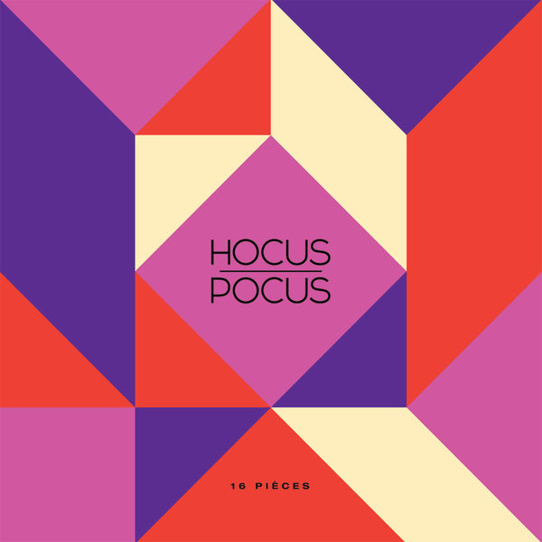
16 Pièces
Hocus Pocus
2001
Dr. Dre
21 (Deluxe Edition)
Adele
25
Adele
73 touches
Hocus Pocus
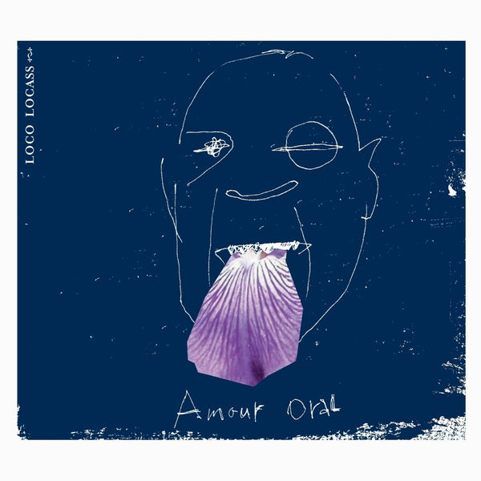
Amour oral
Loco Locass
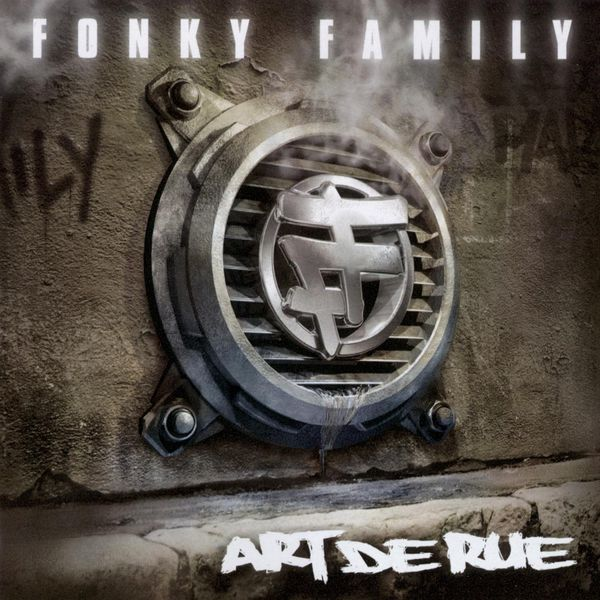
Art de rue
Fonky Family
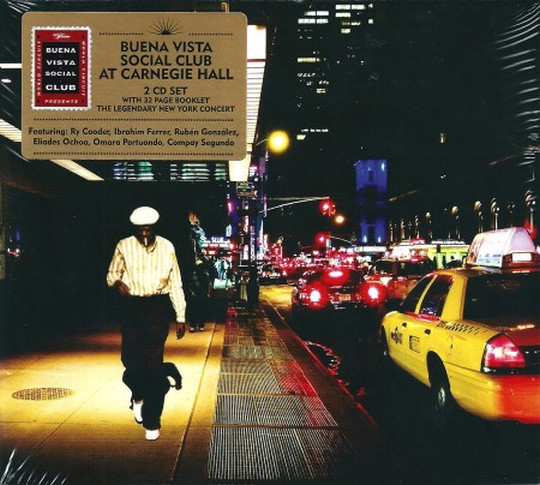
At Carnegie Hall
Buena Vista Social Club
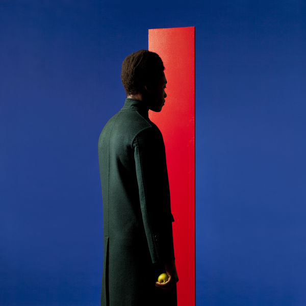
At Least For Now
Benjamin Clementine
AWDA - عودة
Zeyne
Back To Black
Amy Winehouse
Baduizm
Erykah Badu
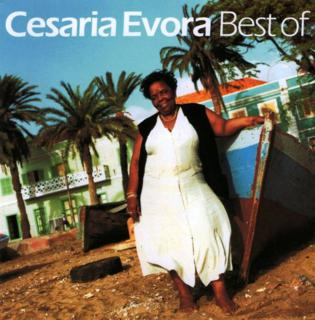
Best Of
Cesaria Evora
The Best of Sade
Sade
Bitume Caviar (vol.1)
Isha
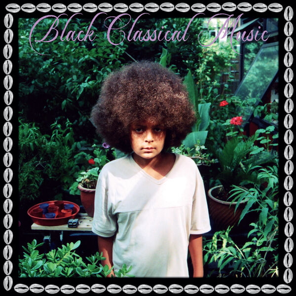
Black Classical Music
Yussef Dayes
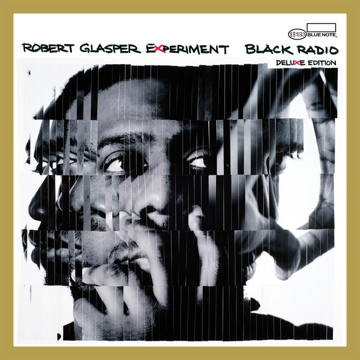
Black Radio
Robert Glasper Experiment
Black Sands
Bonobo
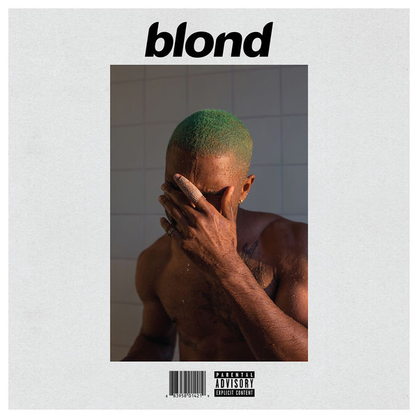
Blonde
Frank Ocean
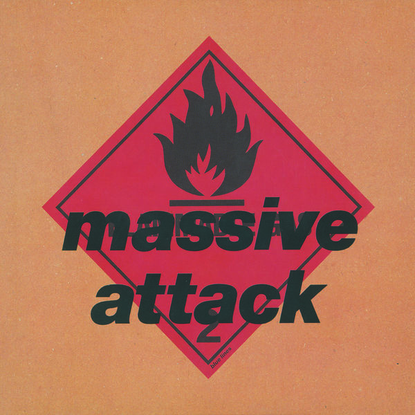
Blue Lines
Massive Attack
BO Y Z
Prince Waly
Busta Flex
Busta Flex
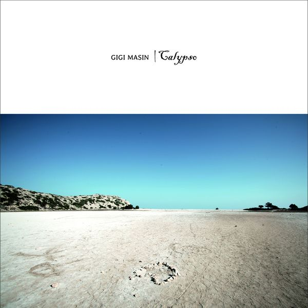
Calypso
Gigi Masin
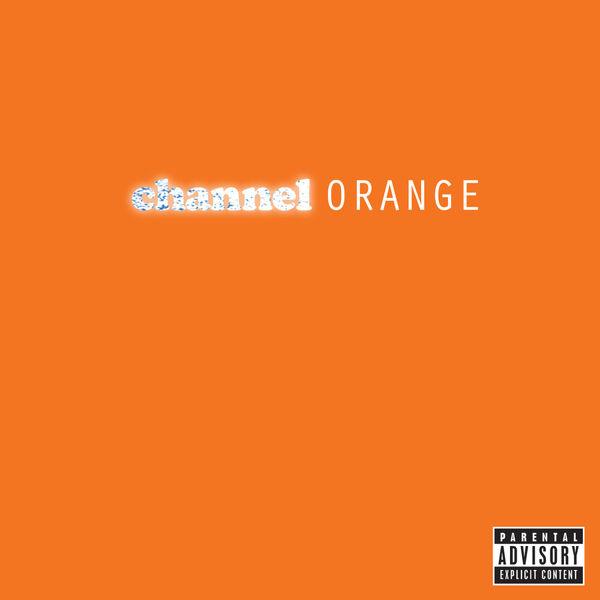
channel ORANGE
Frank Ocean
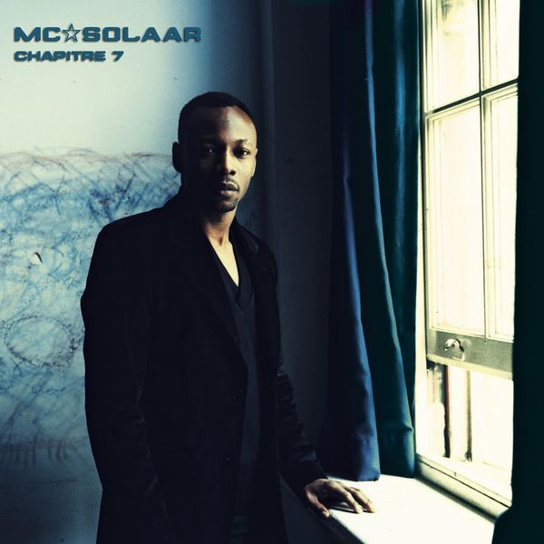
Chapitre 7
MC Solaar
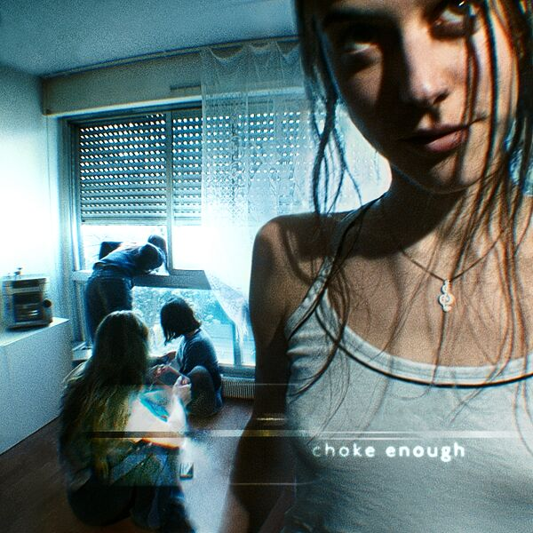
choke enough
Oklou
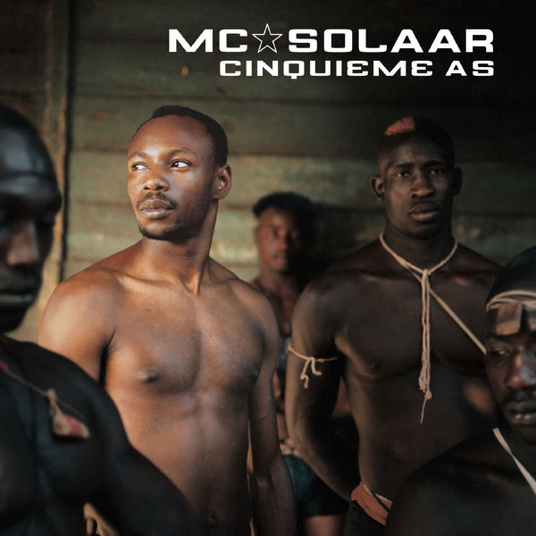
Cinquième as
MC Solaar
Classical Best Of
Ludwig van Beethoven
'/%3e%3cg%20stroke='%238a9099'%20stroke-opacity='0.28'%20fill='none'%3e%3ccircle%20cx='256'%20cy='256'%20r='140'%20stroke-width='2'/%3e%3ccircle%20cx='256'%20cy='256'%20r='112'%20stroke-width='2'/%3e%3ccircle%20cx='256'%20cy='256'%20r='70'%20stroke-width='2'/%3e%3c/g%3e%3c/svg%3e)
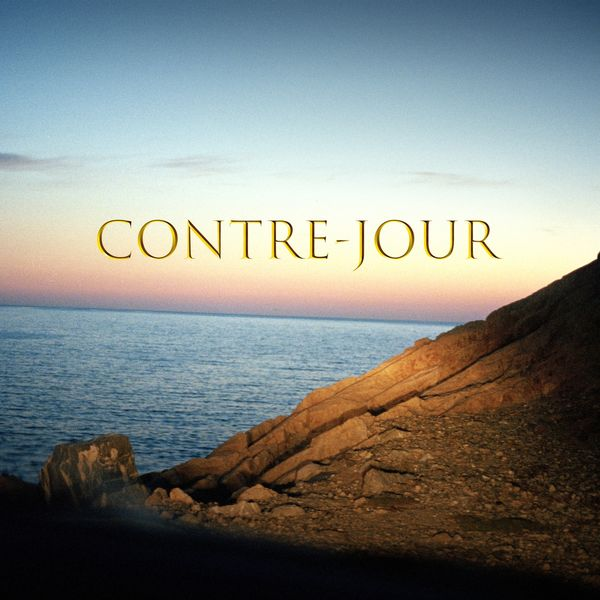
Contre-jour
Johan Papaconstantino
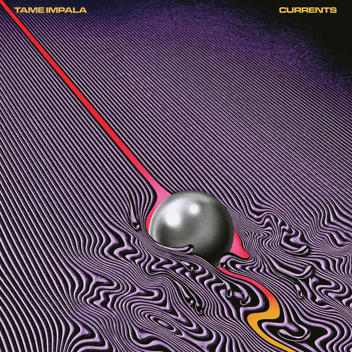
Currents
Tame Impala
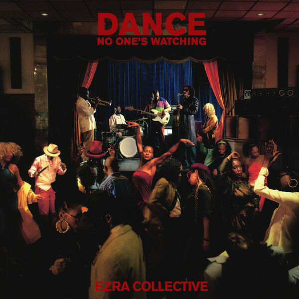
Dance, No One's Watching
Ezra Collective
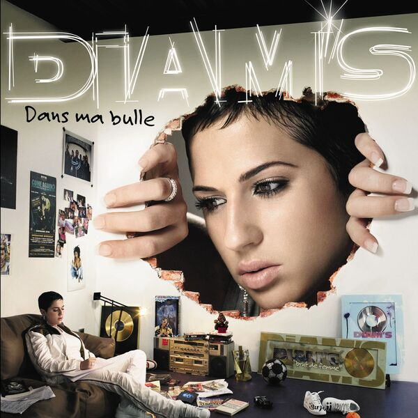
Dans ma bulle
Diam's
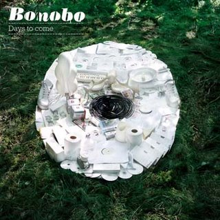
Days to Come
Bonobo
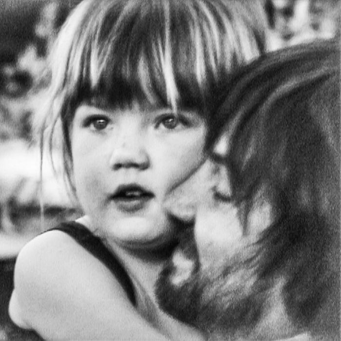
Deadbeat
Tame Impala
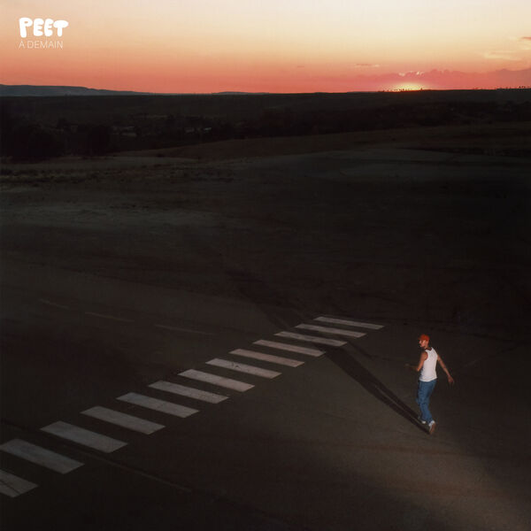
À demain
Peet
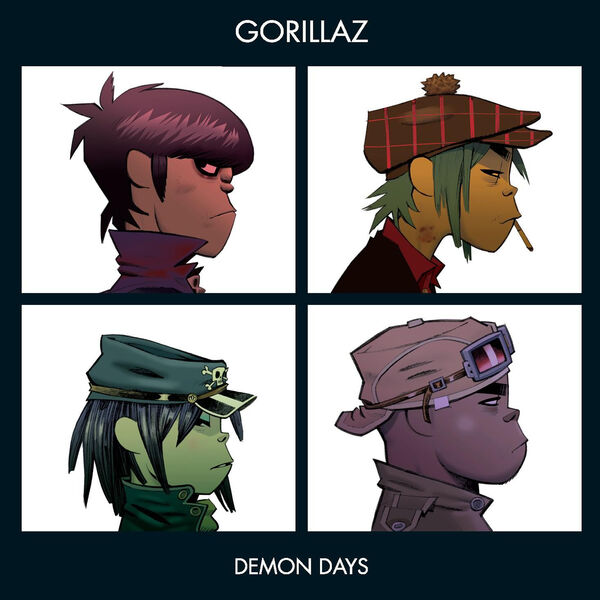
Demon Days
Gorillaz
Dimanche à Bamako
Amadou & Mariam
Dress Rehearsal
Akil the MC
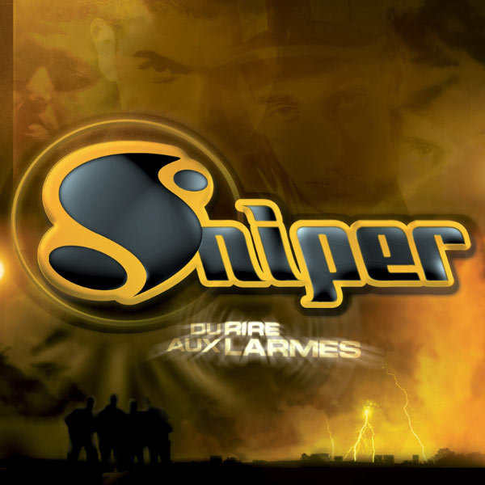
Du rire aux larmes
Sniper
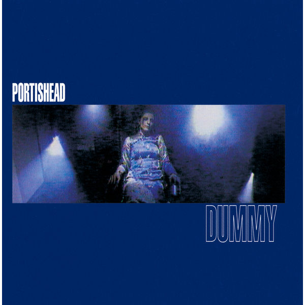
Dummy
Portishead

Smooth Operator (Single Version)
Sade